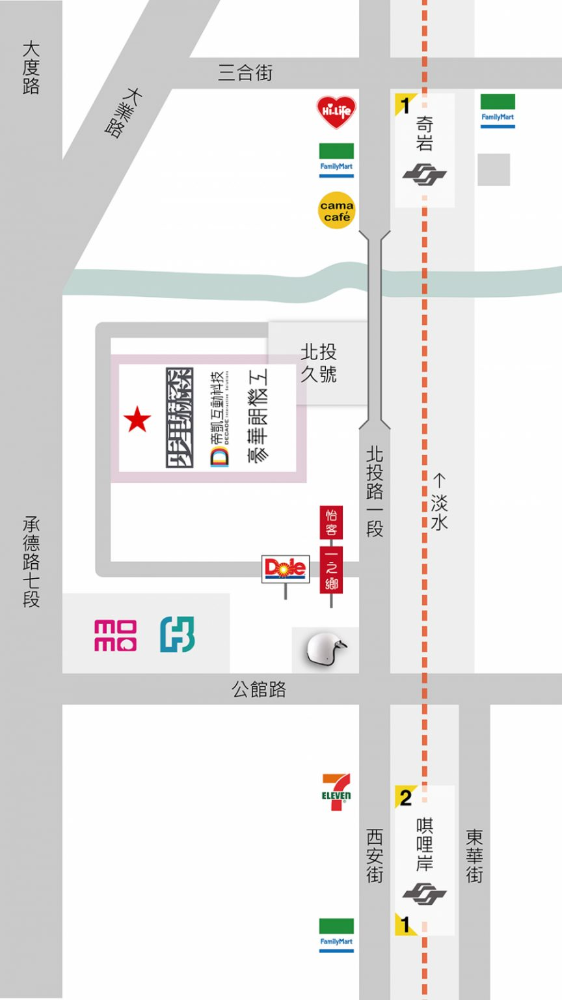

互動科技解決方案
提供展場軟硬體整合設計規劃；舞台燈光控制
聲/光/機/神控制
軟/體/硬/電子電路/多媒體
RF電路/伺服馬達/機械手臂
常設／半永久性裝置
ML/AI/軟體演算法設計
effect algorithm / model training / fineTune
歷年實績｜Works
Every installation behind the scenes · 2006 – 2027
公司簡介
帝凱互動科技成立於2009年，是ㄧ間科技藝術的技術整合公司。擅長將硬體伺服馬達、機械手臂、電腦燈光等媒材利用演算法巧妙地展現活靈活現的作品；近年來中大型展覽互動需求越來越多，每件作品中央控制系統都搭配雲端，讓數千個媒材裝置可以輕鬆控制於手機進行管理、遠端作品可以監控與調閱歷程隨時排查。DECADE.TW期待未來十年在更多作品背後驅動更多繽紛，並步步求精朝向下一個十年邁進。
帝凱科技早年鑽研於嵌入式系統建置領域，透過自行研發中國石油S3軟體與加油機台通訊協定(Current Loop)的控制卡，行銷超過台灣四十間民營加油站，並透過多年累積的嵌入式系統設計，擁有豐富的規劃建置經驗，在互動技術領域穩定的導入系統，帶給觀眾更多互動想像體驗，及體現全新型態讓人耳目一新的聽覺、視覺感受。
2009年起，台灣的互動科技熱潮興起，帝凱科技考量公司長期成長與發展策略，率先透過開放硬體計劃，自行研發互動控制系統－Centurion。其利用CPLD為電路基礎，加上經過數年不斷的改良與擴充軟體功能，已運行於各大展場，如2014年、2015年工研院舉辦的奇想樂園與解密國家寶藏，2012年 Computex Taipei、2011年世界設計大展、台北市立美術館、關渡美術館、鳳甲美術館、MOT藝廊、香港藝術中心、澳洲、新加坡等地。多年以來也與國內知名藝術團隊 合作設計各種極具美感的聽覺、視覺互動藝術裝置，已將互動科技跨域成功的帶給觀眾前所未有的嶄新體驗。
帝凱科技（DECADE.TW）－ 期待未來十年，帝凱將創造更多元、新型態形式的科技藝術產業契機，把藝術與科技融合日常生活，提供每一場更完美的視覺、聽覺饗宴，步步求精朝向下一個十年邁進。
About
Founded in 2009, DECADE Interactive Technology is an art and technology integration company. DECADE.TW specializes in the use of hardware servo motors, robotic arms, computer lighting and other media using algorithms to cleverly show the living works; in recent years the demand for medium and large-scale interactive exhibitions is increasing, the central control system for each piece of artwork with the cloud, so that thousands of media devices can be easily controlled by cell phone management, remote works can be monitored and access to the history of the check at any time. DECADE.TW is looking forward to the next ten years to drive more color behind more works and to move forward to the next ten years step by step.
DECADE.TW has been drilling in the field of embedded system construction for many years. Through the self-development of CPC S3 software and the control card of the communication protocol (Current Loop) of the refueling station, DECADE.TW has marketed more than 40 privately-owned refueling stations in Taiwan, and through years of accumulated embedded system design, DECADE.TW has a wealth of planning and construction experience, and has been able to steadily introduce the system in the field of interactive technology, which has brought the audience a more interactive and imaginative experience. In the field of interactive technology, the stable navigation system brings audiences more interactive imaginative experience, and realizes the new form of refreshing auditory and visual experience.
In 2009, Taiwan’s interactive technology boom began, and considering the company’s long-term growth and development strategy, DecaTech took the lead in developing its own interactive control system, Centurion, through the Open Hardware Program, which utilizes CPLDs as the circuitry base, and after several years of continuous improvement and expansion of software functions, has been running in major exhibitions, such as in 2014, In 2015, ITRI organized the Wonderland and Decoding National Treasures, 2012 Computex Taipei, 2011 World Design Expo, Taipei Fine Arts Museum, Kuandu Museum of Fine Arts, Fengjia Museum of Fine Arts, MOT Gallery, Hong Kong Arts Center, Australia, Singapore, and so on. Over the years, DECADE has also cooperated with the famous art team in Taiwan, HOLLAND, to design a variety of aesthetically pleasing auditory and visual interactive art installations, which have successfully brought unprecedented experiences to audiences across the spectrum of interactive technology.
DECADE Technology (DECADE.TW) – Looking forward to the next decade, DECADE will create more diversified and new forms of technology and art industry opportunities, integrating art and technology in daily life, providing each more perfect visual and auditory feast, and step by step, we will strive to move forward to the next decade.
服務項目
- 智慧型展場導覽系統建置與規劃
- 互動科技裝置設計與製作
- 產品原型設計與製作
- 智慧型櫥窗
- 軟體程式設計
- 電子電路設計與開發
- 互動裝置設計諮詢與規劃
- 學術演講、書籍、台灣Arduino.TW
媒體報導
2012年8月號 CTimes – 封面故事 / 3D印表機 催生下一波製造革命
2012年7月號 CTimes – 專欄 / 跨界整合 互動世界新體驗
2012年6月號 CTimes – 科技藝廊 / 豪華朗機工 代言跨界整合新美學
2012年5月號 CTimes – 專欄 / 新媒體下的跨界演出
2012年4月號 CTimes -封面故事 / Arduino的電路板互動藝術，專欄 / 開放硬體潮流下的新媒體
2011年文化創意精品專輯(2011 Charming Taiwan)，文建會
2011年第四季 新北市政府文化專刊 / 科技藝術的理性與感性 － 跨界整合新美學
2011年11月號 CTimes － 封面故事 / 開放硬體這條路
出版品
建置無線感測網路，Robert Faludi著，林義翔、劉士達譯，O’Rellay台灣，2012年
踏進互動科技世界－使用Arduino，Massimo Banzi著，林義翔譯，旗標出版社，2009年
聯繫我們
Contact DECADE.TW
公司資訊
帝凱科技有限公司 DECADE Co., Ltd.
- 台北市北投路一段9-C號。地圖：GoogleMAP
- No.9-C, Sec. 1, Beitou Rd., Beitou Dist. Taipei City, Taiwan.
- 統一編號：29133824
- e-Mail: victoria@decade.tw
- LINE: @ecz7450a
- FB: DECADE.TW
帳務資訊
- 銀行：中國信託商業銀行－板新分行(822)
- 戶名：帝凱科技有限公司
- 帳號：4175-4026-6515
其他連結
